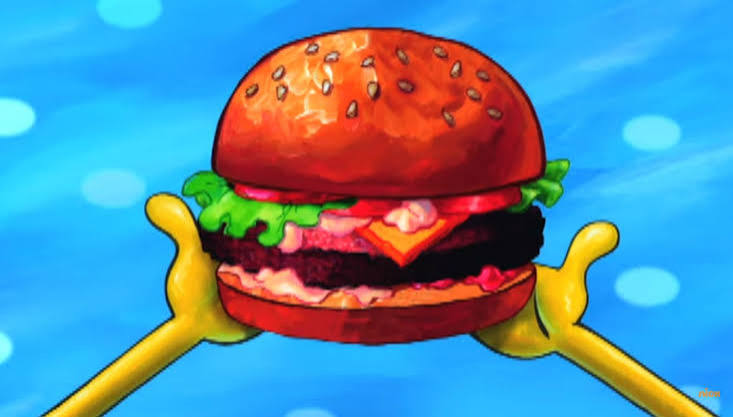

O Segredo do Hambúrguer de Siri
Publicado por: Bob Esponja Calça Quadrada
Trabalhar no Siri Cascudo como cozinheiro de horta é a minha maior paixão! O segredo para o hambúrguer de siri perfeito é sempre colocar muito amor e dedicação em cada etapa do preparo.
